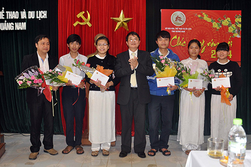

Kỳ thi học sinh giỏi quốc gia năm học 2013 - 2014 học trò đất Quảng tạo bất ngờ

Lần cập nhật cuối lúc Thứ tư, 12 Tháng 2 2014 16:34 Viết bởi Administrator Thứ tư, 12 Tháng 2 2014 16:21
Với thành tích ấn tượng nhất sau 17 năm tái lập tỉnh: giành 22 giải tại Kỳ thi học sinh giỏi (HSG) quốc gia năm học 2013 - 2014, trong đó đáng chú ý lần đầu tiên có giải nhất môn Toán, học trò Quảng Nam còn tạo ra một bất ngờ lớn trong phong trào HSG của cả nước.
|  |
| Ủy viên Trung ương Đảng, Bí thư Tỉnh ủy Nguyễn Đức Hải tặng hoa chúc mừng giáo viên và các học sinh giành giải nhất, nhì tại Kỳ thi HSG quốc gia năm học 2013 - 2014. Ảnh: X.PHÚ |
Quảng Nam được coi là vùng đất học. Tuy nhiên, lâu nay, tại những cuộc thi HSG tầm quốc gia, học trò đất Quảng chỉ có được kết quả khiêm tốn. Gần đây nhất, kỳ thi HSG quốc gia năm học 2012 - 2013, có hơn 50 học sinh Quảng Nam tham gia ở 9 môn Toán, Văn, Lý, Hóa, Sinh, Sử, Địa, Tin học và Tiếng Anh nhưng chỉ giành được kết quả khá thấp cả về lượng lẫn chất với 16 giải (5 giải ba và 11 giải khuyến khích, trong số hơn 2.100 giải của cả nước). Còn nếu tính từ thời điểm tái lập tỉnh năm 1997 đến nay, không ít lần giành được giải nhì nhưng chưa bao giờ học trò đất Quảng được vinh danh với giải thưởng cao nhất, dù cho đó là những môn học xếp “hạng hai” và ít được các địa phương quan tâm đầu tư như Sử, Địa. Có thể nói, ước mơ có được giải nhất tại kỳ thi HSG quốc gia ngày càng dài thêm đối với các thầy, cô giáo và học sinh Quảng Nam.
Ấn tượng
Kỳ thi HSG quốc gia năm học 2013 - 2014, với 22 giải, gồm 1 giải nhất, 4 giải nhì, 5 giải ba và 12 giải khuyến khích, được coi là thành tích ấn tượng nhất của học trò đất Quảng kể từ ngày tái lập tỉnh. Và, sau 17 năm chờ đợi, cuối cùng Quảng Nam đã có được giải nhất, thuộc về môn Toán - môn học được coi khó có cơ hội nhất trong số các môn thi HSG quốc gia. Kỳ tích này thuộc về cậu học trò lớp 11 trường THPT chuyên Nguyễn Bỉnh Khiêm - Võ Quang Hưng. Cần nói thêm, 8 trong số 9 môn mà học sinh Quảng Nam dự thi đều có giải thưởng (trừ môn Sinh), trong đó một số môn gặt hái được kết quả cao như Toán (1 nhất, 1 ba, 1 khuyến khích), Hóa (1 nhì, 2 ba, 1 khuyến khích), Sử (3 nhì, 2 khuyến khích), Lý và Văn (mỗi môn có 1 giải ba và 2 khuyến khích). Trường THPT chuyên Nguyễn Bỉnh Khiêm vẫn là đơn vị chủ lực khi giành 18 giải (1 nhất, 4 nhì, 4 ba và 9 khuyến khích), các giải còn lại thuộc về các trường THPT Tiểu La Thăng Bình (1 giải ba), THPT Núi Thành (2 giải khuyến khích) và THPT Sào Nam Duy Xuyên (1 giải khuyến khích). Điều đặc biệt hơn, trong số 22 học sinh đoạt giải năm nay, có 7 em đang là học sinh lớp 11. Rõ ràng, đây là những trụ cột của đội tuyển HSG tỉnh tại kỳ thi năm sau và các em sẽ có nhiều cơ hội để giành được kết quả cao hơn.
|
Những gương mặt “vàng” Ngoài Võ Quang Hưng (lớp 11) giành giải nhất môn Toán, những gương mặt tiêu biểu đã đem về giải cao tại kỳ thi HSG quốc gia năm học 2013 - 2014 có: Lê Bảo Trang (lớp 12) giải nhì môn Hóa, Nguyễn Thanh Phong (lớp 12), Bùi Thị Tường Vi (lớp 11), Trịnh Nhật Tường Vy (lớp 12) giải nhì môn Sử, Huỳnh Bảo Trung (lớp 12) giải ba Toán, Đinh Thị Hòa (lớp 12) giải ba môn Lý, Nguyễn Trọng Tín (lớp 12), Võ Châu Hoàng Long (lớp 11) giải ba môn Hóa - tất cả đều là học sinh trường THPT chuyên Nguyễn Bỉnh Khiêm; Nguyễn Thị Bích Trâm (lớp 12 trường THPT Tiểu La - Thăng Bình) giải ba môn Văn. |
Dù thành tích vẫn chủ yếu dựa vào một số môn ít có sự cạnh tranh lớn (chẳng hạn năm nay môn Sử có 3 giải nhì hay trước đó là 2 giải nhì môn Địa) nhưng so với các năm trước đây, rõ ràng chất lượng giải ở những môn học “hàng đầu” và thu hút sự quan tâm của nhiều người như Toán, Lý, Hóa năm nay đã cao hơn hẳn. Điều đó cho thấy giờ đây học sinh Quảng Nam vẫn có thể so tài sòng phẳng với bạn bè trên cả nước tại đấu trường danh giá về kiến thức này.
Tạo niềm tin
Lý giải về kết quả khiêm tốn của học trò Quảng Nam tại sân chơi HSG những năm trước đây, nhiều chuyên gia, nhà quản lý giáo dục cho rằng, do ngành GDĐT chưa có các giải pháp hữu hiệu để nâng cao chất lượng công tác giảng dạy HSG. Lâu nay giáo viên làm nhiệm vụ bồi dưỡng kiến thức cho các em học sinh trong đội tuyển tham gia thi HSG quốc gia của tỉnh chủ yếu dựa vào kinh nghiệm mà thiếu sự giao lưu, học tập với các đồng nghiệp tại những trung tâm bồi dưỡng HSG lớn ở Hà Nội, TP.Hồ Chí Minh, Thanh Hóa. Đó là chưa nói đến tâm lý tự ti “mình không thể bằng các thành phố lớn” của cả thầy lẫn trò khiến cho bản thân “tự thua” trước khi bước ra “biển lớn”. Hơn nữa, việc đầu tư cho trường THPT chuyên Nguyễn Bỉnh Khiêm nhiều năm trước đây còn hạn chế, dẫn đến kết quả không tốt.
Do đó, năm nay công tác bồi dưỡng cho đội tuyển HSG tỉnh có sự điều chỉnh về hình thức. Theo thạc sĩ Nguyễn Đình Tiến - Hiệu trưởng trường THPT chuyên Nguyễn Bỉnh Khiêm, lần đầu tiên nhà trường đưa học trò ra học với các thầy, cô giáo trường Đại học Sư phạm Hà Nội. Tại đó, giáo viên của trường cùng tham gia để học hỏi kinh nghiệm. “Dù chỉ học thời gian ngắn nhưng rất bổ ích và rõ ràng thành tích tại kỳ thi HSG quốc gia vừa qua có sự đóng góp không nhỏ của việc này” - thầy Tiến nói. Thầy Diệp Tình - giáo viên Toán trường THPT chuyên Nguyễn Bỉnh Khiêm chia sẻ thêm, việc học sinh được học tập gần 10 ngày với các giáo viên ở Hà Nội đã giúp cho các em thêm kinh nghiệm và cơ hội tiếp cận với những gì mà thầy cô ở trường không có. Tuy nhiên, điều cơ bản và cốt yếu nhất quyết định đến sự thành bại của học trò vẫn là thầy cô của trường.
Sau rất nhiều năm, học trò đất Quảng mới lập nên thành tích ấn tượng tại kỳ thi HSG quốc gia. “Thành tích của kỳ thi năm nay, đặc biệt là giải nhất môn Toán sẽ tạo ra niềm tin lớn cho đội ngũ giáo viên cũng như học trò đất Quảng tại những kỳ thi HSG quốc gia sắp tới” - thầy Tình nói.
XUÂN PHÚ (baoquangnam.com.vn)
- itnbk.edu.vn
- 25/09/2014 00:00 - Những người trẻ mê thiên văn học
- 15/09/2014 08:52 - Trao giải 5 đề tài đạt giải cuộc thi sáng tạo than…
- 30/08/2014 07:07 - Một lớp có 5 em học sinh đỗ thủ khoa đại học
- 01/04/2014 15:52 - Bộ GD&ĐT vừa công bố lịch thi tốt nghiệp THPT năm …
- 28/03/2014 09:52 - Tam Kỳ - Phú Ninh tổ chức hội thi Khi tôi 18
- itnbk.edu.vn
- 06/02/2014 22:18 - Kỳ tích Võ Quang Hưng
- 25/01/2014 22:14 - Bí thư Tỉnh ủy Nguyễn Đức Hải chúc mừng trường THP…
- 13/09/2013 14:23 - Khai mạc giải Việt dã truyền thống Báo Quảng Nam m…
- 09/09/2013 08:41 - Ngành Giáo dục Quảng Nam tưng bừng khai giảng năm …
- 05/09/2013 22:12 - Dự lễ khai giảng năm học mới, Bí thư Tỉnh ủy Nguyễ…